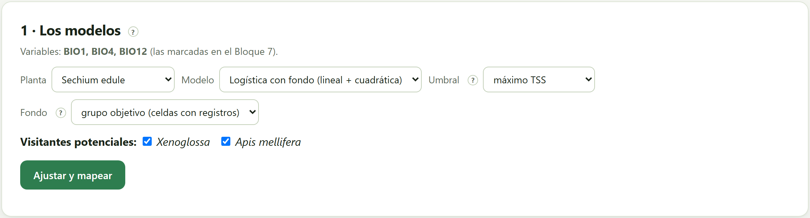
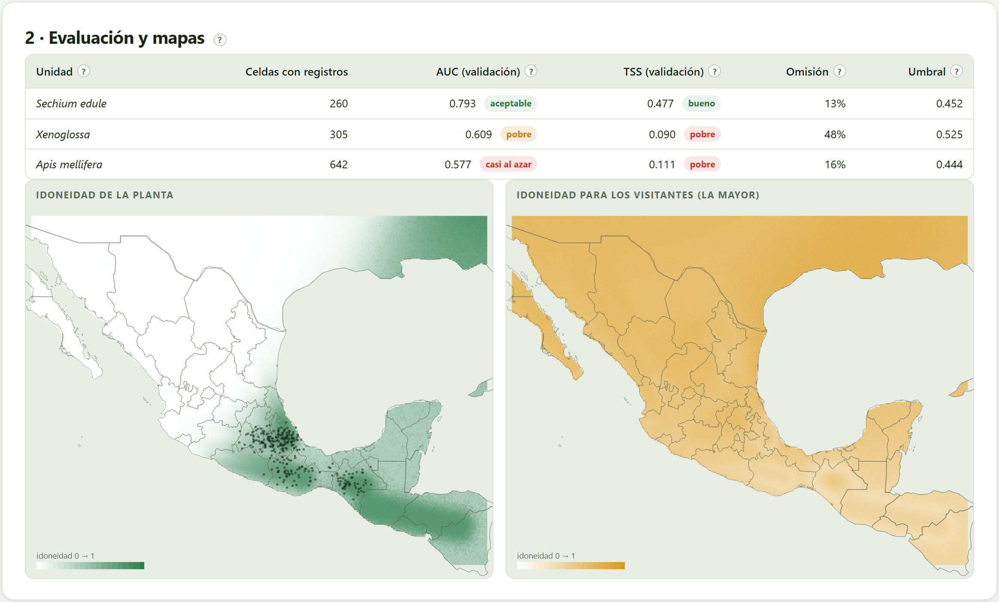
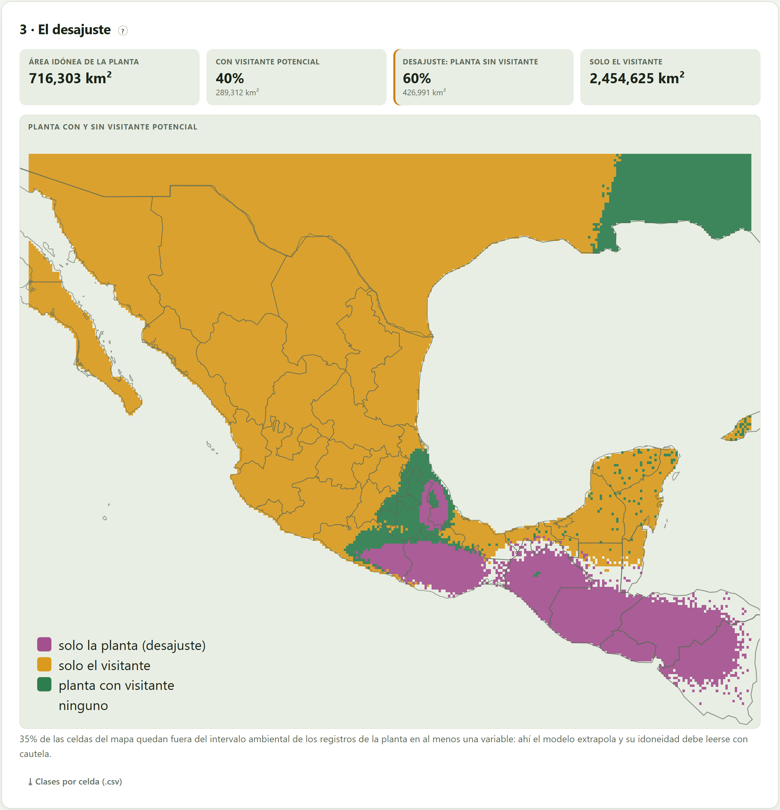
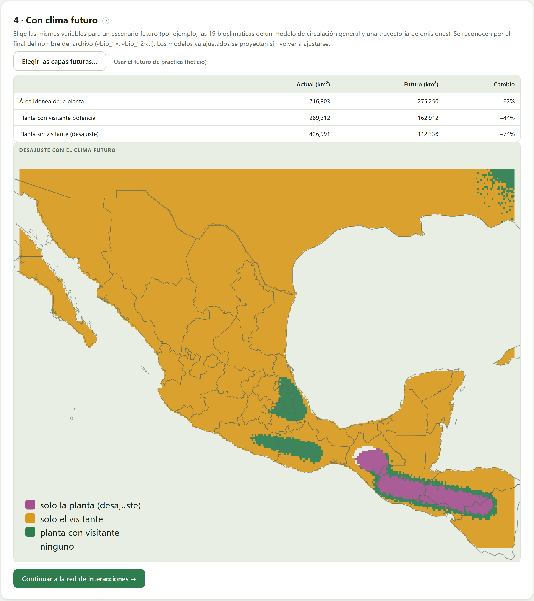

Dónde es idóneo el ambiente para la planta y para cada visitante, y dónde la planta queda sin ningún visitante potencial. Tres modelos de idoneidad —envolvente, Mahalanobis y logística con fondo— evaluados por validación cruzada; el mapa de la planta con y sin visitante; y, con capas de clima futuro, cómo cambia ese desajuste.
El Bloque 7 comparó los nichos en el espacio ambiental; este bloque los lleva de regreso al mapa. Con un modelo de idoneidad para la planta y otro para cada visitante potencial, cada celda cae en una de cuatro clases: idónea para los dos, solo para la planta, solo para el visitante o para ninguno. Las celdas solo para la planta son el desajuste: la parte del área de la planta que dependería de otros visitantes, o que quedaría sin polinización si la relación fuera exclusiva (Schweiger et al. 2008). Con el clima futuro, el desajuste puede crecer o encogerse (Kerr et al. 2015).
Las variables son las marcadas en el Bloque 7 (se leen arriba de la tarjeta). Si no hay al menos dos capas cargadas, el bloque pide ir por ellas. En este capítulo son las capas de práctica —BIO1, BIO4 y BIO12—, y todo lo que se dice de sus mapas es sobre un clima inventado.

| Modelo | Cómo decide la idoneidad |
|---|---|
| Logística con fondo (por omisión) | Compara las celdas con registros contra celdas de fondo con términos lineales y cuadráticos de las variables estandarizadas y una penalización de cresta, ajustada por mínimos cuadrados reponderados. Es el más flexible (Phillips et al. 2009; Elith et al. 2011). |
| Distancia de Mahalanobis | Qué tan lejos está una celda del centro climático de los registros, teniendo en cuenta cómo covarían las variables; la idoneidad es la cola superior de χ² a esa distancia (Farber y Kadmon 2003). |
| Envolvente bioclimática | Idóneo lo que cae dentro del intervalo de los registros en todas las variables, con más peso hacia el centro; el más sencillo y el más conservador (Nix 1986). |
| Control | Qué hace |
|---|---|
| Umbral | El valor a partir del cual una celda se declara idónea: máximo TSS (el que mejor separa registros de fondo), 10 % de presencias (deja fuera el 10 % de registros menos idóneos) o presencia mínima (incluye todos los registros; el más amplio) (Liu et al. 2005). |
| Fondo | Grupo objetivo (las celdas con registros de cualquier unidad del estudio: corrige el sesgo de muestreo) o toda el área. Solo cuenta en la logística y en la evaluación. |
| Visitantes potenciales | Los visitantes que cuentan para el desajuste. Desmarcar uno pregunta qué pasaría sin él. |
| Ajustar y mapear | Ajusta el modelo de la planta y de cada visitante marcado, los evalúa y dibuja los mapas. |

Cada modelo se evalúa por validación cruzada en cuatro partes: se ajusta con tres cuartos de las celdas con registros y se prueba con el cuarto restante, cuatro veces. Así los números dicen qué tan bien predice el modelo registros que no vio.
| Columna | Qué dice | Chayote · Xenoglossa · Apis |
|---|---|---|
| Celdas con registros | Las presencias del modelo (una por celda de la capa). | 260 · 305 · 642 |
| AUC (validación) | La probabilidad de que una celda con registro reciba más idoneidad que una del fondo al azar (Swets 1988). | 0.793 · 0.609 · 0.577 |
| TSS (validación) | Sensibilidad + especificidad − 1 con el umbral elegido; 0 es azar (Allouche et al. 2006). | 0.477 · 0.090 · 0.111 |
| Omisión | La fracción de registros de validación que caen fuera del área idónea. | 13 % · 48 % · 16 % |
| Umbral | El valor de idoneidad del corte. | 0.452 · 0.525 · 0.444 |
| AUC < 0.6 · 0.6–0.7 · 0.7–0.8 · 0.8–0.9 · > 0.9 | casi al azar · pobre · aceptable · buena · excelente. |
| TSS < 0.2 · 0.2–0.4 · 0.4–0.6 · > 0.6 | pobre · regular · bueno · muy bueno. |
| Si un visitante tiene AUC casi al azar | entonces su mapa no discrimina: suele ser un generalista que vive en casi todos los climas del área (la abeja melífera) o una unidad con registros muy dispersos. Su idoneidad alta en todas partes borrará el desajuste; di que es por falta de discriminación, no por nicho compartido. |
Con datos de solo presencia, el AUC depende del tamaño del fondo: compara modelos con el mismo fondo, no contra números de otros artículos (Lobo et al. 2008).
En la Figura 8.2, el modelo del chayote es aceptable y su mapa sigue la vertiente húmeda del sur y del Golfo de las capas de práctica; los de los visitantes casi no discriminan, y el mapa de la derecha —la mayor idoneidad entre los dos en cada celda— sale alto casi en todas partes. El mapa de la planta muestra además un fenómeno real de estos modelos: idoneidad alta en el noreste, fuera del área de los registros, donde el modelo extrapola a climas que no vio.

| Recuadro | Qué dice | En la práctica |
|---|---|---|
| Área idónea de la planta | La superficie de las celdas idóneas para la planta, en km² sobre la esfera. | 716,303 km² |
| Con visitante potencial | La fracción y el área donde también es idónea para al menos un visitante. | 40 % · 289,312 km² |
| Desajuste: planta sin visitante | La fracción y el área donde es idónea solo para la planta. | 60 % · 426,991 km² |
| Solo el visitante | El área idónea para algún visitante pero no para la planta. | 2,454,625 km² |
Debajo del mapa, la app dice qué fracción de las celdas queda fuera del intervalo ambiental de los registros de la planta en al menos una variable: «35% de las celdas del mapa quedan fuera del intervalo ambiental de los registros de la planta en al menos una variable: ahí el modelo extrapola y su idoneidad debe leerse con cautela.» ⤓ Clases por celda (.csv) descarga cada celda con sus coordenadas, la idoneidad de la planta y su clase actual y futura.
El mapa se basa solo en idoneidad ambiental: no considera dispersión, barreras, uso del suelo, la conducta de los visitantes ni otros visitantes que no estén en la lista. Un desajuste grande dice dónde conviene buscar en campo qué visita a la planta; no dice que ahí la planta no se poliniza.
| Si el desajuste cambia mucho con el umbral | entonces muéstralo con dos reglas (máximo TSS y 10 % de presencias) y usa la misma para la planta y los visitantes. |
| Si los modelos de los visitantes tienen TSS pobre | entonces no concluyas sobre el desajuste: el mapa de visitantes no es confiable. |
| Si una parte grande del mapa se extrapola | entonces recorta la interpretación al área donde hay registros y dilo en los métodos. |
La cuarta tarjeta aplica los modelos ya ajustados, sin volver a ajustarlos, a las mismas variables calculadas para un periodo futuro según un modelo climático y una trayectoria de emisiones. Elegir las capas futuras… recibe los archivos, que se reconocen por el final de su nombre («bio_1», «bio_12»…) y deben ser las mismas variables en uso. Para practicar, Usar el futuro de práctica (ficticio) carga un futuro inventado, más cálido y más seco, que solo funciona con las capas de práctica.

La tabla compara, en km², el área idónea de la planta, la que tiene visitante potencial y el desajuste, hoy y en el futuro, con su cambio en porcentaje. El informe del Bloque 10 lo retoma con los nombres de los archivos futuros.
Un solo modelo climático es una de muchas proyecciones posibles. Para un artículo, repite la proyección con tres o más modelos climáticos y dos trayectorias de emisiones, y reporta el intervalo del cambio. La app proyecta un conjunto de capas a la vez: vuelve a elegir las capas futuras para cada combinación y anota el resultado.
| Mensaje | Qué significa y qué hacer |
|---|---|
| Hacen falta capas ambientales | Carga al menos dos capas en el Bloque 7. |
| Primero ajusta los modelos con el clima actual | El futuro se proyecta con los modelos ya ajustados: pulsa Ajustar y mapear antes. |
| Faltan capas futuras para: … | Las capas futuras deben ser las mismas variables en uso y llamarse igual al final («bio_1»…). |
| El futuro de práctica solo acompaña a las capas de práctica del Bloque 7 | Con tus capas reales, elige tus capas futuras. |
| N % de las celdas del mapa quedan fuera del intervalo ambiental… | Ahí el modelo extrapola. Léelo con cautela y dilo en los métodos. |
| Una unidad con muy pocas celdas con registros | La validación cruzada necesita registros en cada parte; con muy pocos, el modelo y su evaluación son frágiles. Reúne especies en su género o amplía el área. |